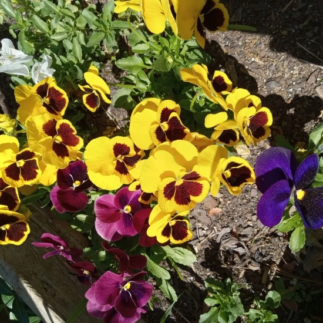
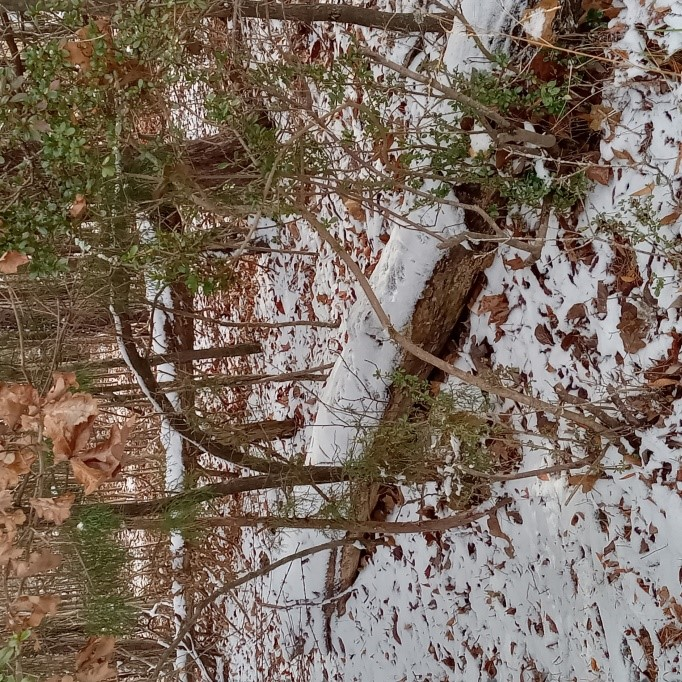

Photo by Suzanne Cottrell
View on Current Project
Loblolly Pine Bark
Featured on the Current Project page, accompanying the thematic reflection on how nature triggers vivid memories.
Suzanne photographs the same natural world she explores in verse and prose. Below is a curated gallery of her nature photography alongside selected images that illustrate themes throughout her published books, current projects, and poetry archives.
Intimate views of blooming perennials, forest textures, and seasonal foliage that accompany Suzanne's writing.
Featured on the Current Project page, accompanying the thematic reflection on how nature triggers vivid memories.
.PNG)
Featured on the Current Project page, accompanying the reflection on preserving and protecting our natural surroundings.

Featured across the site, welcoming readers on the Contact and Honors pages.

Featured as an evocative botanical section anchor on the Publications page.

Featured on the Media page, reflecting the sensory depth of Suzanne's audio readings and nature essays.

Featured in the Nature Writing archive, paired with Suzanne's reflective outdoor observations.
A vivid macro study highlighting intricate petal contours in the home garden.

Capturing the distinct fan geometry and enduring calm of autumnal ginkgo foliage.

A tactile exploration of timber grooves and quiet woodlands weathering the seasons.

Early spring companions displaying contrasting gold and violet tones.

Leaf luster caught in afternoon light, mirroring themes of woodland stillness.
Suzanne's writing often begins with an unexpected encounter on foot or in the garden: insects, woodland reptiles, and winter footprints.

Featured on the Current Project page, illustrating the enduring motif of nature as beauty.

A quiet woodland wanderer that inspired the author's cherished turtle motif and outdoor poems.

A patient sentinel pausing in stillness, captured during a quiet field walk.

Ephemeral winter impressions through fresh powder, embodying the quiet evidence of wild neighbors.
The sweeping lakes and forested shorelines where Suzanne finds quiet reflection for her writing.

Featured on the Home and Current Project pages, capturing the serene waters that inspired Suzanne's forthcoming collection, Suspended Silence.
Browse selected poems, flash fiction, and nature essays categorized by literary form.
Explore Suzanne's four published books of poetry, haiku, and prose chapbooks.
Listen to audio recordings, podcast features, and community storytelling projects.